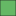

<!doctype html>
<html lang="en">
    <head>
        <meta charset="utf-8">
        <meta http-equiv="X-UA-Compatible" content="IE=edge">
        <meta name="viewport" content="initial-scale=1,user-scalable=no,maximum-scale=1,width=device-width">
        <meta name="mobile-web-app-capable" content="yes">
        <meta name="apple-mobile-web-app-capable" content="yes">
        <link rel="stylesheet" href="css/leaflet.css">
        <link rel="stylesheet" href="css/qgis2web.css"><link rel="stylesheet" href="css/fontawesome-all.min.css">
        <link rel="stylesheet" href="css/MarkerCluster.css">
        <link rel="stylesheet" href="css/MarkerCluster.Default.css">
        <link rel="stylesheet" href="css/leaflet-search.css">
        <link rel="stylesheet" href="css/leaflet-control-geocoder.Geocoder.css">
        <link rel="stylesheet" href="css/leaflet-measure.css">
        <style>
        html, body, #map {
            width: 100%;
            height: 100%;
            padding: 0;
            margin: 0;
        }
        </style>
        <title></title>
    </head>
    <body>
        <div id="map">
        </div>
        <script src="js/qgis2web_expressions.js"></script>
        <script src="js/leaflet.js"></script>
        <script src="js/leaflet.rotatedMarker.js"></script>
        <script src="js/leaflet.pattern.js"></script>
        <script src="js/leaflet-hash.js"></script>
        <script src="js/Autolinker.min.js"></script>
        <script src="js/rbush.min.js"></script>
        <script src="js/labelgun.min.js"></script>
        <script src="js/labels.js"></script>
        <script src="js/leaflet-control-geocoder.Geocoder.js"></script>
        <script src="js/leaflet-measure.js"></script>
        <script src="js/leaflet.markercluster.js"></script>
        <script src="js/leaflet-search.js"></script>
        <script src="data/Boundaries_1.js"></script>
        <script src="data/ApartmentsCount750m_2.js"></script>
        <script src="data/ApartmentQGIS_3.js"></script>
        <script>
        var highlightLayer;
        function highlightFeature(e) {
            highlightLayer = e.target;

            if (e.target.feature.geometry.type === 'LineString') {
              highlightLayer.setStyle({
                color: '#ffff00',
              });
            } else {
              highlightLayer.setStyle({
                fillColor: '#ffff00',
                fillOpacity: 1
              });
            }
            highlightLayer.openPopup();
        }
        var map = L.map('map', {
            zoomControl:true, maxZoom:28, minZoom:1
        }).fitBounds([[28.349331451213676,76.84554963452126],[28.525209668750758,77.1865159948999]]);
        var hash = new L.Hash(map);
        map.attributionControl.setPrefix('<a href="https://github.com/tomchadwin/qgis2web" target="_blank">qgis2web</a> &middot; <a href="https://leafletjs.com" title="A JS library for interactive maps">Leaflet</a> &middot; <a href="https://qgis.org">QGIS</a>');
        var autolinker = new Autolinker({truncate: {length: 30, location: 'smart'}});
        var measureControl = new L.Control.Measure({
            position: 'topleft',
            primaryLengthUnit: 'feet',
            secondaryLengthUnit: 'miles',
            primaryAreaUnit: 'sqfeet',
            secondaryAreaUnit: 'sqmiles'
        });
        measureControl.addTo(map);
        document.getElementsByClassName('leaflet-control-measure-toggle')[0]
        .innerHTML = '';
        document.getElementsByClassName('leaflet-control-measure-toggle')[0]
        .className += ' fas fa-ruler';
        var bounds_group = new L.featureGroup([]);
        function setBounds() {
        }
        map.createPane('pane_OpenStreetMap_0');
        map.getPane('pane_OpenStreetMap_0').style.zIndex = 400;
        var layer_OpenStreetMap_0 = L.tileLayer('https://tile.openstreetmap.org/{z}/{x}/{y}.png', {
            pane: 'pane_OpenStreetMap_0',
            opacity: 1.0,
            attribution: '',
            minZoom: 1,
            maxZoom: 28,
            minNativeZoom: 0,
            maxNativeZoom: 19
        });
        layer_OpenStreetMap_0;
        map.addLayer(layer_OpenStreetMap_0);
        function pop_Boundaries_1(feature, layer) {
            layer.on({
                mouseout: function(e) {
                    for (i in e.target._eventParents) {
                        e.target._eventParents[i].resetStyle(e.target);
                    }
                    if (typeof layer.closePopup == 'function') {
                        layer.closePopup();
                    } else {
                        layer.eachLayer(function(feature){
                            feature.closePopup()
                        });
                    }
                },
                mouseover: highlightFeature,
            });
            var popupContent = '<table>\
                    <tr>\
                        <th scope="row">Locality Name</th>\
                        <td>' + (feature.properties['LocName'] !== null ? autolinker.link(feature.properties['LocName'].toLocaleString()) : '') + '</td>\
                    </tr>\
                </table>';
            layer.bindPopup(popupContent, {maxHeight: 400});
        }

        function style_Boundaries_1_0() {
            return {
                pane: 'pane_Boundaries_1',
                opacity: 1,
                color: 'rgba(0,0,0,1.0)',
                dashArray: '',
                lineCap: 'square',
                lineJoin: 'bevel',
                weight: 1.0,
                fillOpacity: 0,
                interactive: true,
            }
        }
        map.createPane('pane_Boundaries_1');
        map.getPane('pane_Boundaries_1').style.zIndex = 401;
        map.getPane('pane_Boundaries_1').style['mix-blend-mode'] = 'normal';
        var layer_Boundaries_1 = new L.geoJson(json_Boundaries_1, {
            attribution: '',
            interactive: true,
            dataVar: 'json_Boundaries_1',
            layerName: 'layer_Boundaries_1',
            pane: 'pane_Boundaries_1',
            onEachFeature: pop_Boundaries_1,
            style: style_Boundaries_1_0,
        });
        bounds_group.addLayer(layer_Boundaries_1);
        map.addLayer(layer_Boundaries_1);
        function pop_ApartmentsCount750m_2(feature, layer) {
            layer.on({
                mouseout: function(e) {
                    for (i in e.target._eventParents) {
                        e.target._eventParents[i].resetStyle(e.target);
                    }
                    if (typeof layer.closePopup == 'function') {
                        layer.closePopup();
                    } else {
                        layer.eachLayer(function(feature){
                            feature.closePopup()
                        });
                    }
                },
                mouseover: highlightFeature,
            });
            var popupContent = '<table>\
                    <tr>\
                        <th scope="row">Locality Name</th>\
                        <td>' + (feature.properties['LocName'] !== null ? autolinker.link(feature.properties['LocName'].toLocaleString()) : '') + '</td>\
                    </tr>\
                    <tr>\
                        <th scope="row">Count of Apartments _750m</th>\
                        <td>' + (feature.properties['Apartments'] !== null ? autolinker.link(feature.properties['Apartments'].toLocaleString()) : '') + '</td>\
                    </tr>\
                </table>';
            layer.bindPopup(popupContent, {maxHeight: 400});
        }

        function style_ApartmentsCount750m_2_0(feature) {
            if (feature.properties['Apartments'] >= 0.000000 && feature.properties['Apartments'] <= 6.000000 ) {
                return {
                pane: 'pane_ApartmentsCount750m_2',
                opacity: 1,
                color: 'rgba(35,35,35,1.0)',
                dashArray: '',
                lineCap: 'butt',
                lineJoin: 'miter',
                weight: 1.0, 
                fill: true,
                fillOpacity: 1,
                fillColor: 'rgba(199,71,20,1.0)',
                interactive: true,
            }
            }
            if (feature.properties['Apartments'] >= 6.000000 && feature.properties['Apartments'] <= 13.000000 ) {
                return {
                pane: 'pane_ApartmentsCount750m_2',
                opacity: 1,
                color: 'rgba(35,35,35,1.0)',
                dashArray: '',
                lineCap: 'butt',
                lineJoin: 'miter',
                weight: 1.0, 
                fill: true,
                fillOpacity: 1,
                fillColor: 'rgba(238,247,92,1.0)',
                interactive: true,
            }
            }
            if (feature.properties['Apartments'] >= 13.000000 && feature.properties['Apartments'] <= 52.000000 ) {
                return {
                pane: 'pane_ApartmentsCount750m_2',
                opacity: 1,
                color: 'rgba(35,35,35,1.0)',
                dashArray: '',
                lineCap: 'butt',
                lineJoin: 'miter',
                weight: 1.0, 
                fill: true,
                fillOpacity: 1,
                fillColor: 'rgba(0,139,0,1.0)',
                interactive: true,
            }
            }
        }
        map.createPane('pane_ApartmentsCount750m_2');
        map.getPane('pane_ApartmentsCount750m_2').style.zIndex = 402;
        map.getPane('pane_ApartmentsCount750m_2').style['mix-blend-mode'] = 'normal';
        var layer_ApartmentsCount750m_2 = new L.geoJson(json_ApartmentsCount750m_2, {
            attribution: '',
            interactive: true,
            dataVar: 'json_ApartmentsCount750m_2',
            layerName: 'layer_ApartmentsCount750m_2',
            pane: 'pane_ApartmentsCount750m_2',
            onEachFeature: pop_ApartmentsCount750m_2,
            style: style_ApartmentsCount750m_2_0,
        });
        bounds_group.addLayer(layer_ApartmentsCount750m_2);
        map.addLayer(layer_ApartmentsCount750m_2);
        function pop_ApartmentQGIS_3(feature, layer) {
            layer.on({
                mouseout: function(e) {
                    for (i in e.target._eventParents) {
                        e.target._eventParents[i].resetStyle(e.target);
                    }
                    if (typeof layer.closePopup == 'function') {
                        layer.closePopup();
                    } else {
                        layer.eachLayer(function(feature){
                            feature.closePopup()
                        });
                    }
                },
                mouseover: highlightFeature,
            });
            var popupContent = '<table>\
                    <tr>\
                        <th scope="row">Apartment Name</th>\
                        <td>' + (feature.properties['Apartment Name'] !== null ? autolinker.link(feature.properties['Apartment Name'].toLocaleString()) : '') + '</td>\
                    </tr>\
                    <tr>\
                        <th scope="row">Locality</th>\
                        <td>' + (feature.properties['Locality'] !== null ? autolinker.link(feature.properties['Locality'].toLocaleString()) : '') + '</td>\
                    </tr>\
                    <tr>\
                        <th scope="row">Apartment Code</th>\
                        <td>' + (feature.properties['Apartment Code'] !== null ? autolinker.link(feature.properties['Apartment Code'].toLocaleString()) : '') + '</td>\
                    </tr>\
                    <tr>\
                        <th scope="row">Latitude</th>\
                        <td>' + (feature.properties['Latitude'] !== null ? autolinker.link(feature.properties['Latitude'].toLocaleString()) : '') + '</td>\
                    </tr>\
                    <tr>\
                        <th scope="row">Longitude</th>\
                        <td>' + (feature.properties['Longitude'] !== null ? autolinker.link(feature.properties['Longitude'].toLocaleString()) : '') + '</td>\
                    </tr>\
                    <tr>\
                        <th scope="row">Possession</th>\
                        <td>' + (feature.properties['Possession'] !== null ? autolinker.link(feature.properties['Possession'].toLocaleString()) : '') + '</td>\
                    </tr>\
                    <tr>\
                        <th scope="row">Rent</th>\
                        <td>' + (feature.properties['Rent'] !== null ? autolinker.link(feature.properties['Rent'].toLocaleString()) : '') + '</td>\
                    </tr>\
                    <tr>\
                        <th scope="row">Segmentation</th>\
                        <td>' + (feature.properties['Segmentation'] !== null ? autolinker.link(feature.properties['Segmentation'].toLocaleString()) : '') + '</td>\
                    </tr>\
                </table>';
            layer.bindPopup(popupContent, {maxHeight: 400});
        }

        function style_ApartmentQGIS_3_0() {
            return {
                pane: 'pane_ApartmentQGIS_3',
                radius: 4.0,
                opacity: 1,
                color: 'rgba(35,35,35,1.0)',
                dashArray: '',
                lineCap: 'butt',
                lineJoin: 'miter',
                weight: 1,
                fill: true,
                fillOpacity: 1,
                fillColor: 'rgba(190,207,80,1.0)',
                interactive: true,
            }
        }
        map.createPane('pane_ApartmentQGIS_3');
        map.getPane('pane_ApartmentQGIS_3').style.zIndex = 403;
        map.getPane('pane_ApartmentQGIS_3').style['mix-blend-mode'] = 'normal';
        var layer_ApartmentQGIS_3 = new L.geoJson(json_ApartmentQGIS_3, {
            attribution: '',
            interactive: true,
            dataVar: 'json_ApartmentQGIS_3',
            layerName: 'layer_ApartmentQGIS_3',
            pane: 'pane_ApartmentQGIS_3',
            onEachFeature: pop_ApartmentQGIS_3,
            pointToLayer: function (feature, latlng) {
                var context = {
                    feature: feature,
                    variables: {}
                };
                return L.circleMarker(latlng, style_ApartmentQGIS_3_0(feature));
            },
        });
        var cluster_ApartmentQGIS_3 = new L.MarkerClusterGroup({showCoverageOnHover: false,
            spiderfyDistanceMultiplier: 2});
        cluster_ApartmentQGIS_3.addLayer(layer_ApartmentQGIS_3);

        bounds_group.addLayer(layer_ApartmentQGIS_3);
        cluster_ApartmentQGIS_3.addTo(map);
        var osmGeocoder = new L.Control.Geocoder({
            collapsed: true,
            position: 'topleft',
            text: 'Search',
            title: 'Testing'
        }).addTo(map);
        document.getElementsByClassName('leaflet-control-geocoder-icon')[0]
        .className += ' fa fa-search';
        document.getElementsByClassName('leaflet-control-geocoder-icon')[0]
        .title += 'Search for a place';
        var baseMaps = {};
        L.control.layers(baseMaps,{' ApartmentQGIS': cluster_ApartmentQGIS_3,'Apartments Count 750m<br /><table><tr><td style="text-align: center;"></td><td>0 - 6</td></tr><tr><td style="text-align: center;"></td><td>6 - 13</td></tr><tr><td style="text-align: center;"></td><td>13 - 52</td></tr></table>': layer_ApartmentsCount750m_2,' Boundaries': layer_Boundaries_1,"OpenStreetMap": layer_OpenStreetMap_0,}).addTo(map);
        setBounds();
        var i = 0;
        layer_ApartmentsCount750m_2.eachLayer(function(layer) {
            var context = {
                feature: layer.feature,
                variables: {}
            };
            layer.bindTooltip((exp_label_ApartmentsCount750m_2_eval_expression(context) !== null?String('<div style="color: #323232; font-size: 10pt; font-family: \'Open Sans\', sans-serif;">' + exp_label_ApartmentsCount750m_2_eval_expression(context)) + '</div>':''), {permanent: true, offset: [-0, -16], className: 'css_ApartmentsCount750m_2'});
            labels.push(layer);
            totalMarkers += 1;
              layer.added = true;
              addLabel(layer, i);
              i++;
        });
        map.addControl(new L.Control.Search({
            layer: cluster_ApartmentQGIS_3,
            initial: false,
            hideMarkerOnCollapse: true,
            propertyName: 'Locality'}));
        document.getElementsByClassName('search-button')[0].className +=
         ' fa fa-binoculars';
        resetLabels([layer_Boundaries_1,layer_ApartmentsCount750m_2,layer_ApartmentQGIS_3]);
        map.on("zoomend", function(){
            resetLabels([layer_Boundaries_1,layer_ApartmentsCount750m_2,layer_ApartmentQGIS_3]);
        });
        map.on("layeradd", function(){
            resetLabels([layer_Boundaries_1,layer_ApartmentsCount750m_2,layer_ApartmentQGIS_3]);
        });
        map.on("layerremove", function(){
            resetLabels([layer_Boundaries_1,layer_ApartmentsCount750m_2,layer_ApartmentQGIS_3]);
        });
        </script>
    </body>
</html>
